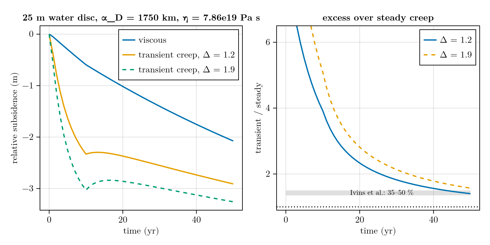

Transient creep
ViscousMantle models steady-state (secondary) creep: a single viscosity, one relaxation timescale per wavenumber. Real mantle rock also shows transient (primary) creep — a much faster, partly recoverable deformation in the first years to decades after a load change, seen in laboratory torsion experiments and in the geodetic response to tides, post-seismic flow and rapid ice loss.
TransientCreepMantle adds that band: the steady Maxwell dashpot in series with N Kelvin–Voigt branches (a Prony series), so the viscous displacement splits as u = u_M + Σⱼ u_K[j]. N = 1 is the classic Burgers body. This example reproduces the qualitative result of Ivins et al. (2021), whose Fig. 8 shows the subsidence beneath a suddenly imposed disc load for an extended-Burgers versus a Maxwell half-space.
Setup
Fig. 8 of Ivins et al. (2021) presents the following geometry: a $25 \, \mathrm{m}$ water disc of radius $\alpha_D = 1750 \, \mathrm{km}$, switched on at $t = 0$, with the subsidence read beneath the disc centre over $50 \, \mathrm{yr}$. The load is prescribed as ice, so $25 \, \mathrm{m}$ of water becomes 25 ρ_water/ρ_ice of ice.
using FastIsostasy, CairoMakie
c = PhysicalConstants()
W, n = 8.0e6, 7 # 16 000 km wide box, 128 x 128
domain = RegionalDomain(W, n)
disc_radius = 1.75e6 # α_D
water_equivalent = 25.0 # m
H_disc = (water_equivalent * c.rho_water / c.rho_ice) .* (domain.R .< disc_radius)
t_end = 50.0
t_out = collect(0.0:1.0:t_end)
it = TimeInterpolatedIceThickness(
[0.0, 1e-3, 1e3], [zeros(domain), H_disc, H_disc], domain)
bcs = BoundaryConditions(domain, ice_thickness = it)BoundaryConditions{Float64, Matrix{Float64}, TimeInterpolatedIceThickness{Float64, Matrix{Float64}, TimeInterpolation2D{Float64, Matrix{Float64}}}}(TimeInterpolatedIceThickness{Float64, Matrix{Float64}, TimeInterpolation2D{Float64, Matrix{Float64}}}([0.0, 0.001, 1000.0], [[0.0 0.0 … 0.0 0.0; 0.0 0.0 … 0.0 0.0; … ; 0.0 0.0 … 0.0 0.0; 0.0 0.0 … 0.0 0.0], [0.0 0.0 … 0.0 0.0; 0.0 0.0 … 0.0 0.0; … ; 0.0 0.0 … 0.0 0.0; 0.0 0.0 … 0.0 0.0], [0.0 0.0 … 0.0 0.0; 0.0 0.0 … 0.0 0.0; … ; 0.0 0.0 … 0.0 0.0; 0.0 0.0 … 0.0 0.0]], TimeInterpolation2D{Float64, Matrix{Float64}}([0.0, 0.001, 1000.0], [[0.0 0.0 … 0.0 0.0; 0.0 0.0 … 0.0 0.0; … ; 0.0 0.0 … 0.0 0.0; 0.0 0.0 … 0.0 0.0], [0.0 0.0 … 0.0 0.0; 0.0 0.0 … 0.0 0.0; … ; 0.0 0.0 … 0.0 0.0; 0.0 0.0 … 0.0 0.0], [0.0 0.0 … 0.0 0.0; 0.0 0.0 … 0.0 0.0; … ; 0.0 0.0 … 0.0 0.0; 0.0 0.0 … 0.0 0.0]], false)), OffsetBC{Float64, Matrix{Float64}}(RegularBCSpace(), 0.0, [0.25 0.0 … 0.0 0.25; 0.0 0.0 … 0.0 0.0; … ; 0.0 0.0 … 0.0 0.0; 0.25 0.0 … 0.0 0.25]), OffsetBC{Float64, Matrix{Float64}}(ExtendedBCSpace(), 0.0, [0.25 0.0 … 0.0 0.25; 0.0 0.0 … 0.0 0.0; … ; 0.0 0.0 … 0.0 0.0; 0.25 0.0 … 0.0 0.25]), OffsetBC{Float64, Matrix{Float64}}(ExtendedBCSpace(), 0.0, [0.25 0.0 … 0.0 0.25; 0.0 0.0 … 0.0 0.0; … ; 0.0 0.0 … 0.0 0.0; 0.25 0.0 … 0.0 0.25]))Elastic and gravitational parameters follow their Fig. 6: $\mu_1 = 67 \, \mathrm{GPa}$, $\rho = 3380 \, \mathrm{kg \, m^{-3}}$, $g = 9.8 \, \mathrm{m \, s^{-2}}$. Panel (b) of Fig. 8 uses $\eta = 7.86 \times 10^{19} \, \mathrm{Pa \, s}$, i.e. a Maxwell time $\tau_M = \eta/\mu_1 \approx 37.2 \, \mathrm{yr}$.
Their half-space carries no lithospheric plate, so we make the lithosphere vanishingly thin — flexural rigidity goes as the cube of its thickness, leaving $β = ρg$ to all intents and purposes.
mantle_viscosity = 7.86e19 # Pa s => τ_M ≈ 37.2 yr
shearmodulus = 67e9 # μ₁ [Pa]
function build(mantle)
se = SolidEarth(domain;
lithosphere = LaterallyConstantLithosphere(),
mantle = mantle,
layer_boundaries = [1.0e3], # ~no plate: D ∝ thickness³
layer_viscosities = [mantle_viscosity],
rho_uppermantle = 3380.0,
)
# The semi-implicit Crank-Nicolson path discretises time itself, so it needs
# a fixed step. dt must resolve the retardation time τ (here 7.14 yr).
opts = SolverOptions(show_progress = false, integ = EulerIntegrator(dt = 0.25))
nout = NativeOutput(vars = [:u], t = t_out, T = Float64)
return Simulation(domain, bcs, RegionalSeaLevel(), se, (0.0, t_end);
nout = nout, opts = opts)
end
# Subsidence beneath the disc centre, relative to the state just after loading.
function centre_subsidence(mantle)
sim = build(mantle)
run!(sim)
i, j = domain.nx ÷ 2, domain.ny ÷ 2
w = [snapshot[i, j] for snapshot in sim.nout.vals[:u]]
return w .- w[1]
endcentre_subsidence (generic function with 1 method)Two rheologies, one load
Δ is the relaxation strength μ₁/μ₂ and τ the retardation time η₂/μ₂. The values are the ones labelled on their Fig. 8: Δ ∈ {1.2, 1.9} from Jackson (2019) torsion experiments, $\tau_H = 7.14 \, \mathrm{yr}$.
w_steady = centre_subsidence(ViscousMantle())
w_12 = centre_subsidence(TransientCreepMantle(
shearmodulus = shearmodulus, relaxation_strength = 1.2, kelvin_time = 7.14))
w_19 = centre_subsidence(TransientCreepMantle(
shearmodulus = shearmodulus, relaxation_strength = 1.9, kelvin_time = 7.14));┌ Warning: NetCDF filename does not end with '.nc' and is therefore ignored.
└ @ FastIsostasy ~/work/FastIsostasy.jl/FastIsostasy.jl/src/io.jl:333
┌ Warning: NetCDF filename does not end with '.nc' and is therefore ignored.
└ @ FastIsostasy ~/work/FastIsostasy.jl/FastIsostasy.jl/src/io.jl:333
┌ Warning: NetCDF filename does not end with '.nc' and is therefore ignored.
└ @ FastIsostasy ~/work/FastIsostasy.jl/FastIsostasy.jl/src/io.jl:333Subsidence history
The signature of transient creep is a vigorous early subsidence that then slows, leaving the steady-creep curve to catch up — compare their Fig. 8.
The enhancement is largest immediately after loading and decays as t grows past the retardation time τ. Ivins et al. report the extended-Burgers subsidence exceeding the Maxwell one by 35–50 per cent at the end of their loading interval.
fig = Figure(size = (760, 380))
ax = Axis(fig[1, 1],
xlabel = "time (yr)", ylabel = "relative subsidence (m)",
title = "25 m water disc, α_D = 1750 km, η = 7.86e19 Pa s")
lines!(ax, t_out, w_steady, label = "viscous", linewidth = 2)
lines!(ax, t_out, w_12, label = "transient creep, Δ = 1.2", linewidth = 2)
lines!(ax, t_out, w_19, label = "transient creep, Δ = 1.9", linewidth = 2,
linestyle = :dash)
axislegend(ax, position = :rt)
ax2 = Axis(fig[1, 2],
xlabel = "time (yr)", ylabel = "transient / steady",
title = "excess over steady creep")
band!(ax2, [0, t_end], [1.35, 1.35], [1.50, 1.50], color = (:grey, 0.25))
text!(ax2, 26, 1.43, text = "Ivins et al.: 35–50 %", align = (:center, :center),
fontsize = 11)
lines!(ax2, t_out[2:end], w_12[2:end] ./ w_steady[2:end], label = "Δ = 1.2",
linewidth = 2)
lines!(ax2, t_out[2:end], w_19[2:end] ./ w_steady[2:end], label = "Δ = 1.9",
linewidth = 2, linestyle = :dash)
hlines!(ax2, [1.0], color = :black, linestyle = :dot)
ylims!(ax2, 0.9, 6.5)
axislegend(ax2, position = :rt)
fig
Reduction to steady creep
The relaxation strength Δ = μ₁/μ₂ controls how much compliance the Kelvin branch adds. As Δ → 0 the branch stiffens (μ₂ → ∞), u_K locks at zero and the coupled 2×2 system collapses onto the ViscousMantle update — which the test suite checks to round-off, and which is the cleanest statement of the fact that transient creep extends steady creep rather than replacing it.
w_locked = centre_subsidence(TransientCreepMantle(
shearmodulus = shearmodulus, relaxation_strength = 1e-9, kelvin_time = 7.14))
println("max |Δ→0 − steady| = ",
maximum(abs, w_locked .- w_steady), " m")
println("peak steady subsidence = ", maximum(abs, w_steady), " m")┌ Warning: NetCDF filename does not end with '.nc' and is therefore ignored.
└ @ FastIsostasy ~/work/FastIsostasy.jl/FastIsostasy.jl/src/io.jl:333
max |Δ→0 − steady| = 1.8444101801406987e-9 m
peak steady subsidence = 2.075517642403806 mTheir §4 loading study is a flat, homogeneous, gravitating half-space with a square-edged disc load, and their Fig. 8 is incompressible — the same regime FastIsostasy solves, so the geometry matches. Three things still differ:
- We compare relative subsidence
Δw(t) = w(t) − w(0⁺). Theirt = 0elastic offset is that of a homogeneous half-space with $\mu = 67 \, \mathrm{GPa}$, whereas FastIsostasy computes the elastic response from a Farrell (1972) layered-Earth Green's function. Relative subsidence isolates exactly the part the rheology controls. N = 1here, against their continuous relaxation spectrum (α = ½). A single branch captures the amplitude and the decay of the enhancement, not the detailed curve shape; that needs a Prony fit withN ≈ 3–5.- Their load is a true Heaviside; ours ramps over a short but finite step.
TransientCreepMantle is implemented for N = 1 Kelvin branch on the semi-implicit path only: LaterallyConstantLithosphere or RigidLithosphere, ComplexFFTBackend and a fixed step. Laterally variable parameters, N > 1 (needed to fit a continuous relaxation spectrum) and the real-FFT backend all raise an informative error. See roadmaps/burgers.md.
Copy-pastable code
using FastIsostasy, CairoMakie
c = PhysicalConstants()
W, n = 8.0e6, 7 # 16 000 km box, 128 x 128
domain = RegionalDomain(W, n)
H_disc = (25.0 * c.rho_water / c.rho_ice) .* (domain.R .< 1.75e6)
it = TimeInterpolatedIceThickness([0.0, 1e-3, 1e3],
[zeros(domain), H_disc, H_disc], domain)
bcs = BoundaryConditions(domain, ice_thickness = it)
t_out = collect(0.0:1.0:50.0)
# swap `mantle` for ViscousMantle() to get the steady-creep reference
se = SolidEarth(domain;
lithosphere = LaterallyConstantLithosphere(),
mantle = TransientCreepMantle(shearmodulus = 67e9,
relaxation_strength = 1.2, kelvin_time = 7.14),
layer_boundaries = [1.0e3], # ~no plate: D grows as thickness^3
layer_viscosities = [7.86e19],
rho_uppermantle = 3380.0)
# the semi-implicit path needs a fixed step resolving the retardation time
opts = SolverOptions(show_progress = false, integ = EulerIntegrator(dt = 0.25))
nout = NativeOutput(vars = [:u], t = t_out, T = Float64)
sim = Simulation(domain, bcs, RegionalSeaLevel(), se, (0.0, 50.0);
nout = nout, opts = opts)
run!(sim)
i, j = domain.nx ÷ 2, domain.ny ÷ 2
w = [snapshot[i, j] for snapshot in sim.nout.vals[:u]]
lines(t_out, w .- w[1],
axis = (xlabel = "time (yr)", ylabel = "relative subsidence (m)"))